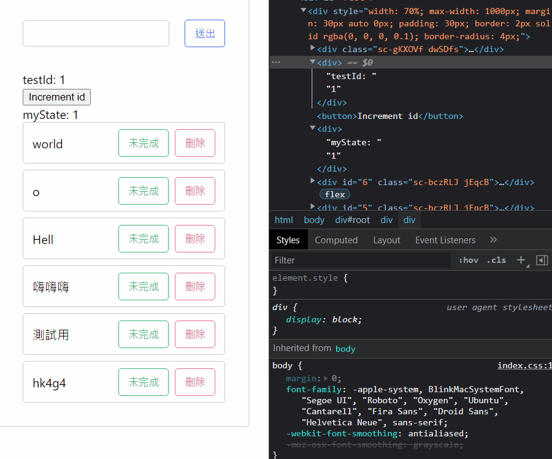

再來一個。
懶人包
以下是幾個很重要的特性：
- 回傳值是一個有 current 屬性的 Object
- 更新 current 值不會觸發 re-render
- re-render 的時後不會被重新賦值
這些是我覺得最重要的幾點，請務必弄清楚。
用來存取 Uncontrolled Component
通常是用在 Uncontrolled Component（沒有 state 的 Component） 上，不過這邊為了方便會直接拿 <input> 來舉例（實務上通常會把 <input> 當成 controlled Component）：
1 | import { useRef } from 'react' |
一開始的 inputRef 應該會是一個空物件 {current: null}（我猜的啦），接著當你把它當作 props 給 Component 的時候就會被變成那個 DOM 元素。
所以你才能在其他 function 中透過 inputRef 來抓到對應的 DOM 元素。
不希望 re-render 後被重新賦值
有時候沒注意好的話可能就會犯這種錯：
1 | function App () { |

這邊碰到的問題是怎麼 id++ 沒用？
原來是因為每次 re-render 的時候又會執行到 let id = 1 這段，這樣就等於又重新賦值了，所以結果還是會顯示 1，而不是遞增後的值。
要解決這個問題有兩種做法，一種是把 let id = 1 宣告在 Component 的外面，這樣 re-render 時就不會重新宣告一次。
另一種作法是用 useRef 來處理：
1 | function App () { |
雖然 re-render 的時候看起來好像會再執行一次 const id = useRef(1)，不過 useRef 的特性就是會把值給保留起來，所以實際上是不會被重新賦值的。
只有像 id.current++ 這種「自己去改變數值」的情況下它的值才會改變。
所以 useRef 就有點像是 useEffect 的顛倒過來。一個不能直接改值，一個可以；而一個在改值後會 re-render， 一個不會。